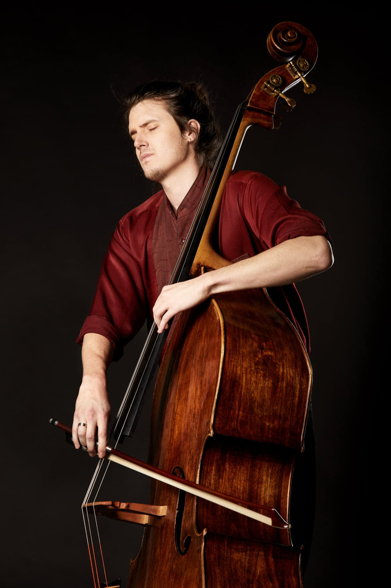

Léo Coq
Contrebasse

D'abord élève d'Anita Pardo au CRR de Lyon, Léo Coq intègre rapidement la classe de contrebasse d'Alberto Bocini à la Haute École de musique de Genève où il y obtiendra un Master d'interprétation en contrebasse. Son parcours musical l'amènera à jouer sous la baguette de grands chefs parmi lesquels on peut citer Nathalie Stuzmann, Julien Salemkour ou encore Pierre Bleuse dans des structures telles que l'Orchestre de chambre de Genève, l'Opéra de Lausanne, l'Orchestre de chambre de le Drôme etc... Il se produit également en musiques de chambre dans de nombreuses salles et festivals.
Léo s'épanouit tout autant en dehors de la musique classique et contemporaine en se produisant dans des formations chanson, rock, musique du monde... ou lors de spectacles pluridisciplinaires. Nourris de toutes ces expériences et du désir de créer, il a eu l'occasion de composer pour divers ensembles, des pièces dans des styles variés, allant de la musique contemporaine à la musique du monde, et cherche encore aujourd'hui dans l'écriture et l'interprétation et à travers tous ces styles, à amener sur scène une musique profondément personnelle et sincère.